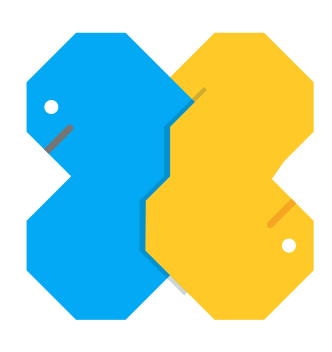

Bem vindos!

GDG Duque de Caxias
Python vs Ruby
Apresentação criada por Lucas Trindade
Disponível online
Por que Python vs Ruby?
- São linguagens de scripts e de fácil entendimento para pessoas leigas.
- São linguagens de programação em que seu sucesso está sendo muito grande recentemente e muito explorado no mercado, muito por causa de seus frameworks.
- São duas linguagens em que no Brasil tem uma comunidade muito grande e aderência, sendo assim mais fácil para iniciantes tirarem suas dúvidas.
- Fácil documentação para iniciantes.
- Além de serem duas linguagens com comunidades bem convidativas.
Características do Python
- Mais objetiva.
- Python trabalha de maneira mais explicita, dificultando menos a interface para o usuário.
- Tem como web framework mais famoso o Django.
- O Django tem como vantagem o seu sistema de organização em que obriga você trabalhar apenas de uma maneira, sem fugir do padrão.
Características do Ruby
- Mais mágica.
- Ruby oferece uma flexibilidade e um empoderamento para os programadores. E permite que o Rails faça pequenos truques transformando ele em um framework web elegante.
- Tem como web framework mais famoso o Rails.
DRY(DON’T REPEAT YOURSELF)
- É um conceito de programação o qual propõe que cada porção de conhecimento em um sistema deve possuir uma representação única, de autoridade e livre de ambiguidades em todo sistema.
- As duas linguagens de programação utilizam como mantra esse conceito pois assim faz com que seu desenvolvimento seja mais rápido.